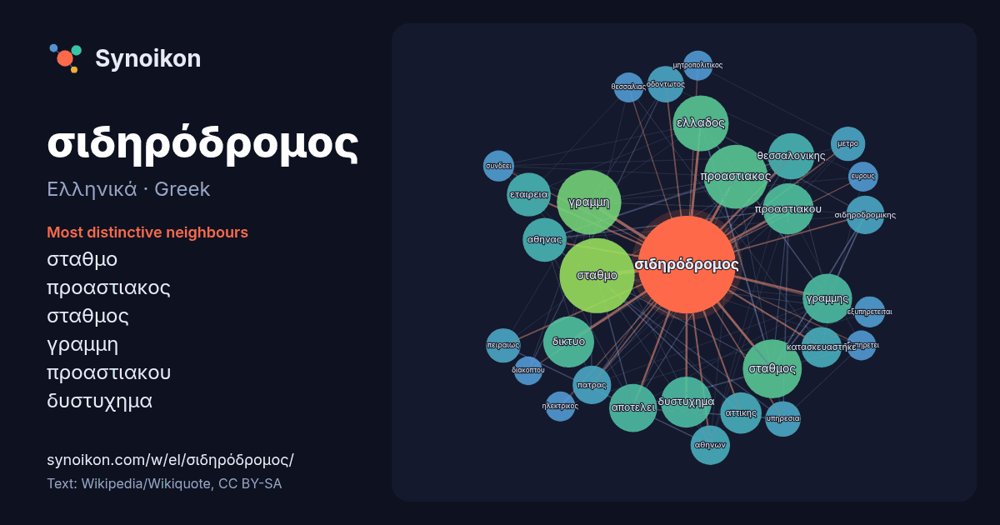

Ελληνικά · Greek · word of the day list
σιδηρόδρομος
“railway” · The words found around it in 934 instances from Greek Wikipedia, Wikiquote.

Most distinctive neighbours
- σταθμο 57×
- προαστιακος 54×
- σταθμος 37×
- γραμμη 37×
- προαστιακου 35×
- δυστυχημα 34×
- ελλαδος 33×
- γραμμης 28×
- δικτυο 27×
- θεσσαλονικης 22×
- αττικης 21×
- αθηνας 21×
- σιδηροδρομικης 20×
- πατρας 20×
- οδοντωτος 19×
- κατασκευαστηκε 17×
- πειραιως 16×
- μετρο 14×
- αθηνων 14×
- εταιρεια 14×
× = how many times more often than in general Greek Wikipedia text.
Most frequent neighbours
- σταθμο 76
- γραμμη 56
- προαστιακος 55
- σταθμος 47
- ελλαδος 42
- δικτυο 35
- δυστυχημα 35
- προαστιακου 35
- γραμμης 33
- αποτελει 31
- θεσσαλονικης 29
- αθηνας 26
- εταιρεια 26
- αττικης 23
- κατασκευαστηκε 22
- αθηνων 21
- μεσω 21
- πατρας 20
- σιδηροδρομικης 20
- οδοντωτος 18
In context
- Ο σιδηρόδρομος είναι σύστημα μεταφοράς επιβατών και εμπορευμάτων με τροχοφόρα σιδηροδρομικά οχήματα (μοιάζουν με λεωφορείο, φορτηγό, αυτοκίνητο και μπορούν Wikipedia snippets · Σιδηρόδρομος
- ο Οδοντωτός αποτελεί τον ορεινότερο σιδηρόδρομο της Ελλάδας. Για να ξεπεραστούν αυτές οι δυσκολίες ο σιδηρόδρομος κατασκευάστηκε με την τεχνική της οδόντωσης Wikipedia snippets · Οδοντωτός σιδηρόδρομος Διακοπτού - Καλαβρύτων
- βρισκόταν το Τρενάκι Πηλίου, ο Οδοντωτός σιδηρόδρομος και η γραμμή Κατάκολο – Αρχαία Ολυμπία. Το σιδηροδρομικό δίκτυο της Πελοποννήσου και της Δυτικής Wikipedia snippets · Οργανισμός Σιδηροδρόμων Ελλάδoς
- Ο όρος προαστιακός σιδηρόδρομος περιγράφει σιδηροδρομικές υποδομές και υπηρεσίες που συνδέουν μητροπολιτικά κέντρα με τα προάστιά τους, ή με γειτονικές Wikipedia snippets · Προαστιακός σιδηρόδρομος
- Ο Υπερσιβηρικός σιδηρόδρομος (Транссибирская магистраль ή Транссиб στα ρωσικά), είναι σιδηροδρομικός άξονας που συνδέει τη Μόσχα και την ευρωπαϊκή Ρωσία Wikipedia snippets · Υπερσιβηρικός σιδηρόδρομος
- 1912, ο σιδηρόδρομος ήταν περιορισμένος μόνον στην Ανατολική Θράκη. Ο Σιδηρόδρομος της Ανατολής συνέχισε να λειτουργεί ως περιφερειακός σιδηρόδρομος έως το Wikipedia snippets · Εταιρεία των Ανατολικών Σιδηροδρόμων
- Ο Προαστιακός Σιδηρόδρομος Θεσσαλονίκης αποτελεί μια υπηρεσία δημόσιας σιδηροδρομικής συγκοινωνίας που εξυπηρετεί την πόλη της Θεσσαλονίκης, συνδέοντάς Wikipedia snippets · Προαστιακός σιδηρόδρομος Θεσσαλονίκης
- Ο Προαστιακός Σιδηρόδρομος Θράκης υπήρξε στο παρελθόν μια υπηρεσία δημόσιας προαστιακής σιδηροδρομικής συγκοινωνίας που εξυπηρετούσε τη Θράκη και λειτουργούσε Wikipedia snippets · Προαστιακός σιδηρόδρομος Θράκης
More Greek words
Precomputed on 2026-10-09 with default settings (±5 words, medium corpus). The interactive map can refresh it with live data.